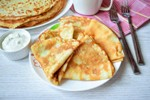

Главная
Главная Блюда
Блюда Заготовки
Заготовки- 
Блюда ежедневного приготовления
- Салат "Мимоза"
- Салат "Свекольный"
- Салат "Дружба"
- Салат "Лисичкина шубка"
- Помидоры, фаршированные яйцами и зеленью
- Тыквенный суп с гренками
- Котлеты морковные
- Тыква в сметаннном соусе
- Минтай в томатной заливке
- Курица с грибами в сливочном соусе
- Свинина по-французски
- Бефстроганов из говяжьей печени
- Шампиньоны с беконом и чесноком
- Наггетсы куриные
- Блинчики
- Сырники
- Тыквенное печенье
- Оладьи на кефире
- Сыр домашний "От тети Клавы"
- Хлеб на сыворотке